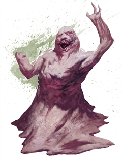

Lemure
A lemure arises when a mortal soul is twisted by evil and banished to the Nine Hells for eternity. The lowest type of devil, lemures are repugnant, shapeless creatures doomed to suffer torment until they are promoted to a higher form of devil, most commonly an imp.
A lemure resembles a molten mass of flesh with a vaguely humanoid head and torso. A permanent expression of anguish twists across its face, its feeble mouth babbling even though it can’t speak.